Informe actualizado con las especificaciones requeridas por el docente 14, 15
Requerimientos no funcionales
1. Carga rápida
La aplicación debe cargar rápidamente para ofrecer una experiencia fluida a los usuarios y minimizar los tiempos de espera.
Para lograr alcanzar este requerimiento, se pueden realizar las siguientes configuraciones en la interfaz:
- Comprimir y ajustar el tamaño de las imágenes y archivos multimedia para reducir el tiempo de carga.
- Implementar técnicas de almacenamiento en caché para almacenar en el dispositivo del usuario los elementos estáticos de la aplicación, lo que permite cargarlos más rápido en visitas posteriores.
- Minimizar y comprimir los archivos de código (HTML, CSS, JavaScript) para reducir su tamaño y mejorar la velocidad de carga.
- Cargar inicialmente solo el contenido visible en la pantalla y luego cargar de manera progresiva el contenido adicional
2. Seguridad
La aplicación debe garantizar la seguridad de la información del usuario, como datos personales y de pago, mediante la implementación de encriptación de datos.
Al estar desarrollando la aplicación usando Firebase, se provee de mecanismos de seguridad inherentes al acceso de cuentas a través de Google, como los siguientes:
- Autenticación de cuentas seguro
- Almacenamiento de datos en la nube, protegido por Google
- Protección contra ataques, mediante filtros y validaciones implementados por Firebase
- Gestión de identidades y roles, lo que evita que usuarios no autorizados realicen acciones fuera de sus capacidades.
3. Accesibilidad
La aplicación debe ser accesible para usuarios con discapacidades, brindando una experiencia inclusiva y facilitando su uso.
Se planea usar interfaz de control de voz para poder navegar a través de la aplicación, por lo que se deben cumplir los siguientes criterios:
- Etiquetar debidamente a través de HTML los elementos interactivos de la página, para que sean fácilmente descritos al usuario y seleccionados mediante comandos por voz.
- La estructura de navegación de la aplicación debe ser clara y lógica, lo que permitirá a las personas con discapacidad visual parcial moverse de manera eficiente entre las diferentes secciones y funciones de la aplicación utilizando comandos de voz.
- Proporcionar opciones de personalización para adaptar la interfaz a las preferencias individuales de los usuarios. Esto puede incluir ajustes de velocidad de la voz, preferencias de lectura y opciones de navegación específicas para satisfacer las necesidades de las personas con discapacidad visual parcial.
4. Escalabilidad
La aplicación debe ser capaz de manejar un aumento en el número de usuarios y transacciones sin degradar el rendimiento.
- Firebase proporciona una infraestructura escalable en la nube, lo que significa que la aplicación puede adaptarse automáticamente a los picos de demanda y al aumento del tráfico sin intervención manual.
- Además, incluye el Firebase Cloud Storage, un servicio de almacenamiento en la nube que permite almacenar y servir contenido estático, como imágenes, videos y archivos. Este almacenamiento se escala automáticamente para adaptarse a la demanda, asegurando una entrega rápida y confiable del contenido a los usuarios.
- Adicionalmente, también cuenta con centros de datos alrededor del mundo, lo que permite que la aplicación se pueda escalar y esté disponible en muchas regiones del mundo de manera rápida.
5. Usabilidad
La aplicación debe ser fácil de usar y proporcionar una experiencia intuitiva y agradable para los usuarios.
Para lograr este requerimiento, se debe:
- Realizar pruebas de usabilidad y recopilar comentarios de los usuarios para iterar y mejorar continuamente la interfaz de usuario.
- Establecer una estructura de navegación lógica y coherente que permita a los usuarios moverse fácilmente por la aplicación y encontrar la información o las funciones que necesitan.
- Adaptar la interfaz de usuario a diferentes dispositivos y tamaños de pantalla para garantizar una experiencia consistente
- Permitir a los usuarios personalizar ciertos aspectos de la aplicación
Requerimientos Funcionales
1. Registro de usuario (Público) en la aplicación
Requerimientos:
El sistema debe permitir a los usuarios crear una cuenta en la aplicación.
Los usuarios deben proporcionar información como nombre, dirección de correo electrónico y contraseña para registrarse.
El sistema debe validar la información proporcionada por el usuario durante el proceso de registro.
El sistema debe almacenar de forma segura la información del usuario en la base de datos.
Caso de uso:
- El usuario abre la aplicación e inicia el proceso de registro.
- El sistema muestra un formulario de registro que solicita información como nombre, dirección de correo electrónico y contraseña.
- El usuario completa el formulario con la información requerida.
- El sistema valida la información ingresada por el usuario.
- Si la validación es exitosa, el sistema almacena de forma segura la información del usuario en la base de datos y genera una cuenta para el usuario.
- El sistema muestra un mensaje de confirmación al usuario, indicando que el registro se ha completado con éxito.
- El usuario puede iniciar sesión en la aplicación utilizando las credenciales proporcionadas durante el registro
2. Búsqueda local de restaurantes
Requerimientos:
El sistema debe permitir a los usuarios buscar restaurantes cercanos a su ubicación actual.
El sistema debe utilizar la ubicación del usuario para mostrar los restaurantes más relevantes en el área.
Los usuarios deben poder ver información detallada sobre cada restaurante, como su nombre, dirección y calificaciones.
Caso de uso:
- El usuario abre la aplicación y selecciona la opción de búsqueda de restaurantes locales.
- El sistema utiliza la ubicación del usuario para mostrar los restaurantes cercanos en una lista.
- El usuario puede desplazarse por la lista para ver los nombres y las calificaciones de los restaurantes.
- Si el usuario selecciona un restaurante específico, el sistema muestra información detallada sobre el restaurante, como su dirección, horario de atención y categoría de comida.
- El usuario puede realizar acciones adicionales, como llamar al restaurante o agregarlo a sus favoritos.
3. Filtros de búsqueda
Requerimientos:
El sistema debe proporcionar filtros para refinar la búsqueda de restaurantes.
Los usuarios deben poder filtrar los resultados por categoría de comida, rango de precios, calificaciones, etc.
Los usuarios deben poder aplicar múltiples filtros para obtener resultados más precisos.
Caso de uso:
- El usuario abre la aplicación y accede a la opción de búsqueda de restaurantes.
- El sistema muestra una interfaz de búsqueda con opciones de filtros.
- El usuario selecciona los filtros deseados, como categoría de comida, rango de precios y calificaciones.
- El sistema aplica los filtros seleccionados y muestra los resultados actualizados.
- El usuario puede explorar los resultados y ver los restaurantes que cumplen con los criterios de los filtros aplicados.
- Si el usuario desea realizar una búsqueda más precisa, puede aplicar filtros adicionales o modificar los existentes.
- El usuario puede realizar acciones adicionales, como ordenar los resultados por calificación o distancia.
- El usuario puede seleccionar un restaurante específico de los resultados filtrados para ver más detalles o realizar un pedido.
4. Solicitar recogida en el establecimiento
Requerimientos:
El sistema debe permitir a los usuarios realizar pedidos para recoger en el restaurante.
Los usuarios deben poder seleccionar un restaurante y ver su menú.
Los usuarios deben poder agregar elementos del menú a su pedido.
Los usuarios deben proporcionar detalles adicionales, como el tiempo estimado de recogida.
El sistema debe enviar una confirmación del pedido al usuario y al restaurante.
Caso de uso:
- El usuario abre la aplicación y busca el restaurante deseado.
- El sistema muestra el menú del restaurante al usuario.
- El usuario selecciona los elementos deseados del menú y los agrega a su pedido.
- El usuario proporciona detalles adicionales, como el tiempo estimado de recogida y cualquier solicitud especial.
- El sistema muestra un resumen del pedido al usuario para su revisión.
- Si el usuario confirma el pedido, el sistema envía una confirmación al usuario y al restaurante.
- El usuario puede recibir actualizaciones sobre el estado de su pedido y se le notifica cuando esté listo para su recogida.
5. Reservar en un restaurante para consumo en el lugar
Requerimientos
El usuario necesita solicitar un consumo en local de manera que se le genere una reserva y pago por adelantado previa validación del servicio que esta por solicitar.
Caso de uso
- Un usuario que ya selecciono un local de comida y los platos a pedir, en ese momento aun se encuentra en la ultima hora de su jornada laboral y quiere reservarse un lugar en un restaurante determinado.
- El sistema valida que el negocio haya permitido esa modalidad desde su configuraciòn.
- El sistema valida que el restaurante confirme su disponibilidad para garantizar informaciòn actualizada.
- El restaurante valida disponibilidad fisica.
- El sistema habilita el boton de “Pedir delivery”.
- El usuario la selecciona, y se genera la peticiòn
El proceso anterior es transparente para el usuario.
6. Solicitar entrega a domicilio a un restaurante
Requerimientos
El usuario necesita que su pedido sea entregado en un lugar determinado que requiera.
Caso de uso
- Un usuario que ya seleccionó un local de comida y los platos a pedir necesita que le lleven su pedido a su lugar de trabajo pues esta muy ocupado.
- El sistema valida que el negocio disponga de esa modalidad de entrega.
- El sistema notifica al restaurante que valide disponibilidad en ese instante.
- El restaurante confirma disponibilidad de servicio.
- El sistema habilita el boton de “Pedir delivery”.
- El usuario selecciona el boton “Pedir delivery”
- El sistema crea la orden a la posiciòn actual del usuario.
- De no registrar GPS, debera ingresarlo manualmente.
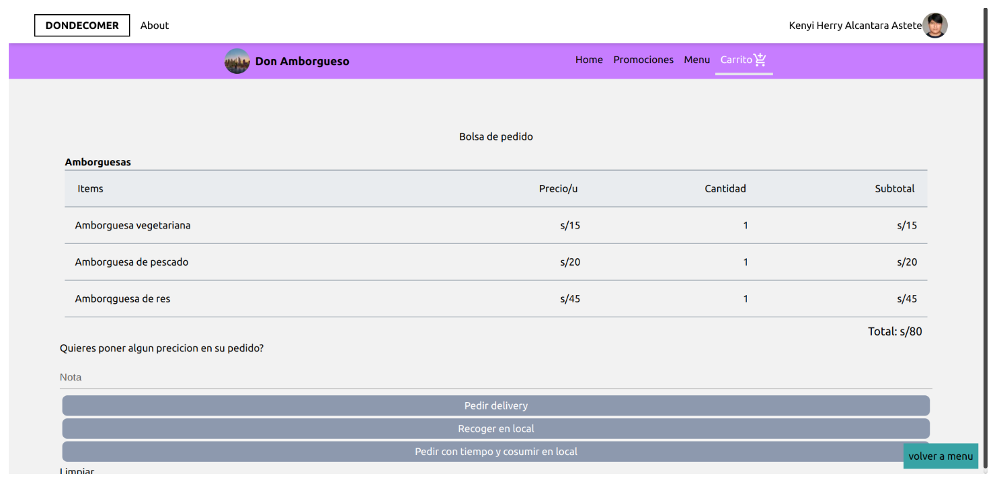
7. Sistema de reseñas
Requerimientos
El usuario necesita un criterio basado en experiencias de otros usuarios para elegir un local.
Caso de uso
- Un usuario esta explorando el catalogo de restaurantes y quiere saber cual restaurante ofrece mejor servicio.
- El sistema muestra en la tarjeta de cada restaurante los “likes” recibidos por clientes previos.
- El usuario, decide su compra basado en esa información adicional.
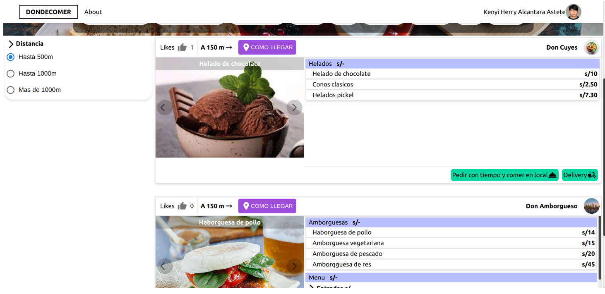
8. Visualizar pedidos activos y pasados
Requerimientos
El usuario necesita hacer seguimiento de sus pedidos delivery, sus reservaciones de consumo en local, o recojo.
Caso de uso 1
- Un usuario que ya solicito un pedido de delivery quiere saber el estado de su pedido.
- El sistema muestra una tarjeta con información de su pedido, y su estado correspondiente(preparando, enviado, entregado).
Caso de uso 2
- Un usuario quiere revisar los restaurantes que visito ultimamente para solicitar un servicio basado en uno previo, o emitir una calificación de un local que anteriormente olvido completar.
- El sistema le muestra cartillas de sus atenciones previas.
- El usuario selecciona ver màs detalles de una atencion previa.
- El usuario puntua al restaurante, y solicita nuevamente ese mismo pedido directamente sin armarlo primero.
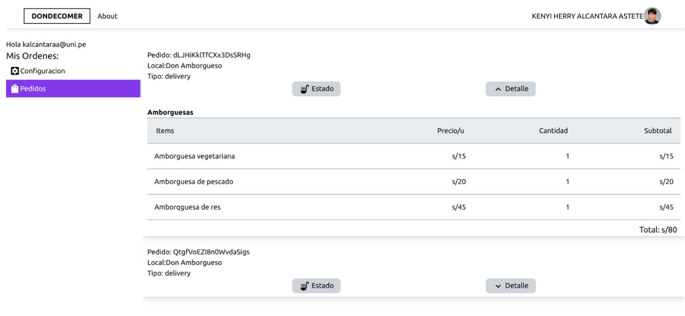
9. Registro de negocio en la aplicacion
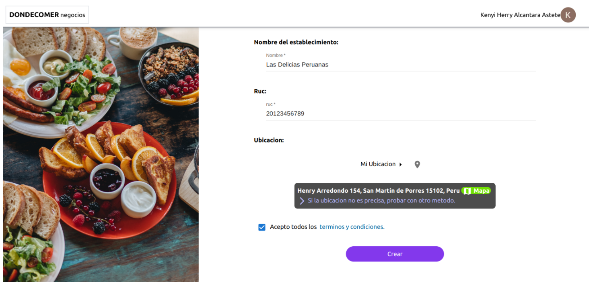
Requerimientos :
Registro del negocio: El usuario desea poder registrar su negocio en la aplicación, proporcionando información como nombre, dirección y ruc.
Caso de uso:
- Usuario (Dueño del negocio): Ingresa a la aplicación y selecciona la >opción de “Registrar mi negocio”.
- Sistema: Saluda al usuario y le solicita que proporcione la información >necesaria para el registro del negocio, como el nombre del negocio, >dirección y ruc .
- Usuario (Dueño del negocio): Completa los campos requeridos con la información del negocio, como “Las Delicias Peruanas”, dirección “Henry Arredondo 154, San Martín de Porres 15102, Peru” y ruc 20123456789".
- Sistema: Valida la información proporcionada y solicita al usuario que verifique los datos antes de proceder.
- Sistema: El sistema redirige al usuario al perfil de su nuevo restaurante.
10. Customizar perfil restaurante:
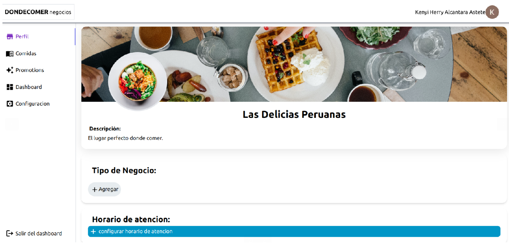
Requeriminetos del usurio:
Customizar apariencia y datos principales: El usuario quiere tener la opción, customizar la apariencia, configurar logo y fondo, quiere configurar el tipo de negocio, horario de atencion, habilitar los servicios que desea ofrecer a través de la aplicación, como entrega a domicilio, recogida en el local y comer en el local.
Caso de uso:
Sistema: Muestra al usuario, las opciones de presentacion del restaurante (Logo, fondo, nombre y frase), el tipo de restaurante (criollo, marino,chifa,etc ), el horario de atencion ,las opciones de servicios que ofrece la aplicación , como entrega a domicilio, recogida en el local y comer en el local y le solicita que seleccione los que desea habilitar, y metodos de pago.
Usuario (Negocio): Configura la apariencia, configura el tipo de negocio, configura el horario de atencion, habilita las opciones de atencion, en este caso, entrega a domicilio y recogida en el local, y el metodo de pago.
Usuario (Dueño del negocio): Completa los campos adicionales con la información correspondiente, como horarios de atención de 10:00 a.m. a 10:00 p.m., tipo de restaurante (Criollo) y métodos de pago aceptados Yape (Agrega el codigo QR).
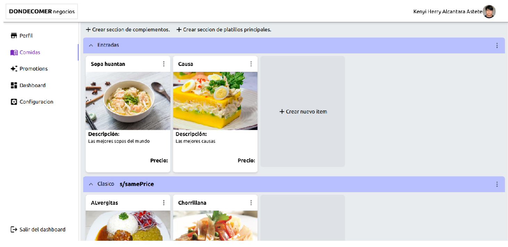
Requerimientos del usuario:
Customización del menú: El usuario necesita tener la capacidad de customizar el menú de su negocio, lo que incluye agregar secciones y subsecciones , nuevos platillos, actualizar la información de los platillos existentes y eliminar platillos del menú, y eliminar secciones o subsecciones.
Agregar seccion o subseccion: El usuario debe poder agregar secciones o subsecciones para agrupar platillos por precio o caracteristicas similares.
Agregar platillos: El usuario debe poder agregar nuevos platillos al menú proporcionando información como nombre, foto, descripción y precio.
Actualizar platillos: El usuario necesita la opción de modificar la información de los platillos existentes, como actualizar el nombre, la foto, la descripción o el precio.
Eliminar platillos: El usuario requiere la posibilidad de eliminar platillos que ya no están disponibles o que desee retirar del menú.
Eliminar seccion o subseccion: El usuario debe poder eliminar secciones o subsecciones.
Caso de uso
Crear seccion:
Usuario (Negocio): Agrega un seccion generica, o una seccion de [Menu] que contiene una plantilla de subsecciones para agregar las entrada y los tipos de menu (Menu clasico, Menu ejecutivo, etc).
Crear Subseccion:
Usuario (Negocio): Agrega una subseccion, Para agregar platillos similares, en precio o caracteristicas cualitativas.
Agregar platillo:
Usuario (Negocio): Selecciona la opción de “Agregar platillo” y proporciona la información necesaria para el nuevo platillo, como nombre, foto, descripción y precio.
Sistema: Valida la información ingresada y agrega el nuevo platillo al menú del negocio.
Actualizar platillo:
Usuario (Negocio): Selecciona la opción de “Actualizar platillo” y elige el platillo que desea modificar de la lista (Modifica nombre, foto,precio, etc).
Sistema: Muestra la información actual del platillo seleccionado y permite al usuario realizar los cambios necesarios, como actualizar el nombre, la foto, la descripción o el precio.
Sistema: Actualiza la información del platillo en el menú del negocio.
Eliminar platillo:
Usuario (Negocio): Selecciona la opción de “Eliminar platillo” y elige el platillo que desea eliminar de la lista.
Sistema: Muestra una confirmación al usuario para asegurarse de que desea eliminar el platillo seleccionado.
Usuario (Dueño del negocio): Confirma la eliminación del platillo.
Sistema: Elimina el platillo seleccionado del menú del negocio.
Eliminar subseccion y seccion:
Usuario (Negocio): Selecciona la opción de eliminar seccion o subseccion.
Sistema: Muestra una confirmación al usuario para asegurarse de que desea eliminar la seccion o subsecion.
Usuario (Dueño del negocio): Confirma la eliminación.
Sistema: Elimina el platillo seleccionado del menú del negocio.
12. DashBoard de cada restaurante:
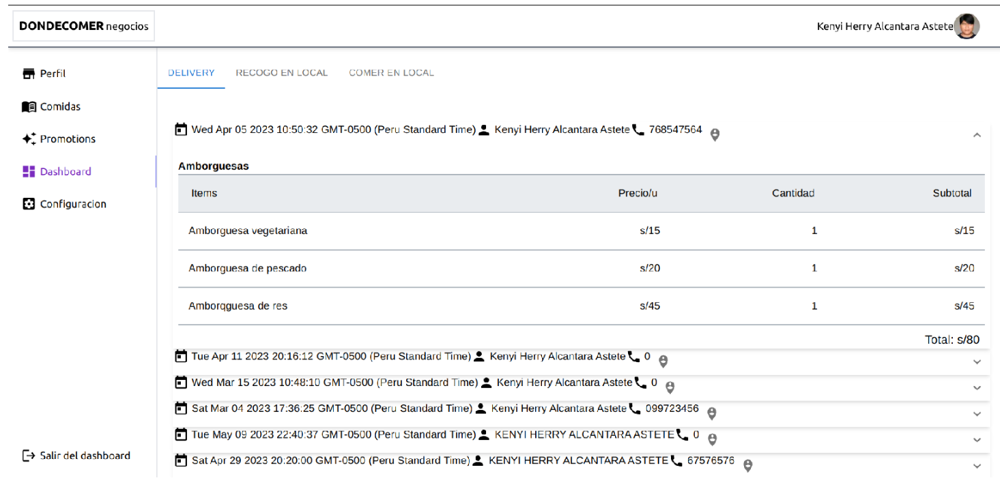
Requerimientos del usuario:
Dashboard de pedidos: El usuario necesita tener acceso a un dashboard o panel de control que muestre una vista general de los pedidos realizados por los clientes.
Organización por tipo de pedido: El usuario requiere la capacidad de visualizar los pedidos por tipo, como “Recoger en Local”, “Comer en local” y “Delivery”, para mantener una mejor organización.
Estado de los pedidos: El usuario debe poder ver el estado actual de cada orden, como resibido, preparando , listo para despachar o entregado.
Datos del pedido: El usuario necesita acceder a la la lista de platillos pedidos.
Datos del cliente: El usuario necesita acceder a los datos del cliente correspondientes a cada pedido, como número de teléfono, ubicación, nombre y código de pedido, para brindar un mejor servicio y cumplir con las necesidades del cliente.
Actualización de estados y notificaciones: El usuario debe tener la opción de actualizar el estado de los pedidos y, si es necesario, enviar notificaciones al cliente para mantenerlo informado sobre cualquier cambio o actualización en su pedido.
Caso de uso:
Usuario (Negocio): Ingresa a la aplicación y accede al dashboard o panel de control.
Sistema: Muestra el dashboard que brinda una vista general de los pedidos realizados por los clientes.
Usuario (Negocio): Explora el dashboard y visualiza los pedidos por tipo, como “Recoger en Local”, “Comer en local” y “Delivery”.
Sistema: Muestra la lista de pedidos para cada tipo, junto con el estado de cada orden.
Usuario (Negocio): Examina los pedidos y sus estados para evaluar el progreso de las órdenes.
Sistema: Proporciona informacion para ver los detalles de cada pedido, como los datos del cliente (teléfono, ubicación, nombre y código de pedido) y pedido de platillos (Lista de platillos).
Sistema: Ofrece opciones adicionales, como actualizar el estado del pedido, marcarlo como, resibido, preparando , listo para despachar o entregado.
Usuario (Negocio): Actualiza el estado del pedido según su progreso y realiza las acciones correspondientes, como marcarlo como resibido, preparando , listo para despachar o entregado.
Sistema: Actualiza el estado del pedido en el dashboard y notifica al cliente sobre cualquier cambio.
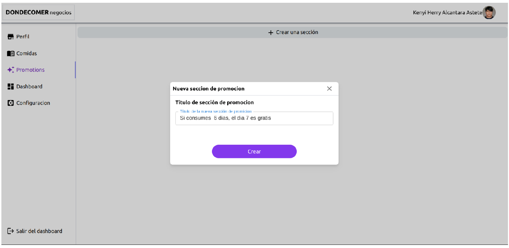
Requerimientos del usuario:
Gestión de promociones: El usuario necesita tener la capacidad de gestionar las promociones que ofrece a los clientes, incluyendo la capacidad de agregar nuevas promociones, actualizar la información de las promociones existentes y quitar promociones del listado.
Agregar promociones: El usuario debe poder agregar nuevas promociones, proporcionando información como el título, la descripción, las condiciones (por ejemplo, número de pedidos al mes) y los beneficios para el cliente.
Actualizar promociones: El usuario necesita la opción de modificar la información de las promociones existentes, como actualizar el título, la descripción, las condiciones o los beneficios.
Quitar promociones: El usuario requiere la posibilidad de eliminar promociones que ya no están vigentes o que desea retirar del listado.
Usuario (Negocio): Ingresa a la aplicación y accede a la sección de “Promociones”.
Sistema: Saluda al usuario y muestra la lista actual de promociones disponibles para el negocio.
Usuario (Dueño del negocio): Explora la lista de promociones existentes y decide agregar, actualizar o quitar promociones según sea necesario.
Sistema: Ofrece las siguientes opciones al usuario: “Agregar promoción”, “Actualizar promoción” o “Quitar promoción”.
Agregar promoción:
Usuario (Negocio): Selecciona la opción de “Agregar promoción” y proporciona la información necesaria para la nueva promoción, como el título de la promoción, la descripción, las condiciones (por ejemplo, número de pedidos al mes) y los beneficios para el cliente.
Sistema: Valida la información ingresada y agrega la nueva promoción a la lista de promociones del negocio.
Actualizar promoción:
Usuario (Negocio): Selecciona la opción de “Actualizar promoción” y elige la promoción que desea modificar de la lista.
Sistema: Muestra la información actual de la promoción seleccionada y permite al usuario realizar los cambios necesarios, como actualizar el título, la descripción, las condiciones o los beneficios.
Usuario (Negocio): Realiza las modificaciones deseadas y confirma los cambios.
Sistema: Actualiza la información de la promoción en la lista de promociones del negocio.
Quitar promoción:
Usuario (Negocio): Selecciona la opción de “Quitar promoción” y elige la promoción que desea eliminar de la lista.
Sistema: Muestra una confirmación al usuario para asegurarse de que desea eliminar la promoción seleccionada.
Usuario (Negocio): Confirma la eliminación de la promoción.
Sistema: Elimina la promoción seleccionada de la lista de promociones del negocio.
Usuario (Negocio): Explora nuevamente la lista de promociones actualizada para verificar los cambios realizados.
Requerimientos funcionales (actualización)
14. Navegación por voz
Caso de uso
Interfaz de voz para navegación en la página web, mediante comandos de voz procesados y enviados como peticiones a la API de ChatGPT, el cual responde un objeto con las posibles respuestas al comando, que se leen mediante un lector de pantalla
Descripción
Implementar una funcionalidad que permita a los usuarios navegar por la página web utilizando comandos de voz en lugar de interactuar con elementos visuales. Los usuarios podrán realizar acciones como seleccionar opciones del menú, acceder a diferentes secciones de la página, realizar búsquedas, interactuar con elementos interactivos y completar tareas básicas utilizando únicamente su voz.
La navegación por voz ofrece una experiencia accesible e inclusiva para personas con discapacidad visual o dificultades de motricidad, permitiéndoles interactuar y utilizar la página web de manera eficiente y cómoda. Además, proporciona una alternativa conveniente para todos los usuarios, ofreciendo una experiencia de navegación hands-free que puede ser más rápida y práctica en ciertos contextos, como al realizar tareas mientras se encuentran ocupados con otras actividades.
Criterio de cumplimiento
- Los usuarios pueden navegar por la página web utilizando comandos de voz de manera intuitiva y precisa.
- Los comandos de voz son reconocidos de manera confiable y responden con acciones apropiadas.
- La navegación por voz es equivalente en funcionalidad y eficiencia a la navegación visual con elementos interactivos.
Dependencias
- Implementación de un sistema de reconocimiento de voz robusto y preciso.
- Diseño y desarrollo de comandos de voz específicos y comprensibles para las acciones y elementos clave de la página web.
Conflictos
-
Posibles conflictos con otras funcionalidades o interacciones de la página web que podrían entrar en conflicto con los comandos de voz, como eventos de clic o acciones programadas.
Fuente: Los requerimientos se derivan de la necesidad de ofrecer una experiencia accesible y práctica para los usuarios de la página web.
-
Tiempo estimado de cumplimiento: El tiempo de implementación puede variar según la complejidad de la página web y las funcionalidades existentes. Se requerirá un análisis y diseño detallado antes de la implementación, por lo que el tiempo estimado puede variar entre una y tres semanas, dependiendo de los recursos y el alcance del proyecto.
Podemos ver los botones para entra en modo voz:
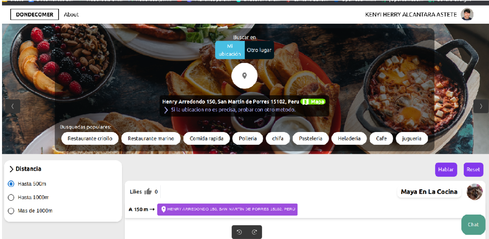
15. Chatbot LLM (Language Model)
Caso de uso
Implementación de un chatbot basado en el modelo de lenguaje GPT (Generative Pre-trained Transformer) para brindar respuestas a preguntas y llevar a cabo conversaciones con los usuarios de la página web.
Descripción
El chatbot LLM utiliza el modelo de lenguaje GPT para generar respuestas contextuales y coherentes a partir de las consultas y mensajes de los usuarios. El objetivo principal es proporcionar una experiencia interactiva y conversacional en la página web, donde los usuarios puedan obtener respuestas a sus preguntas, recibir recomendaciones, realizar consultas y obtener información de manera eficiente y natural.
El chatbot se integra en la página web y se muestra en una ventana de chat. Los usuarios pueden interactuar con el chatbot ingresando mensajes de texto y recibiendo respuestas en tiempo real. El chatbot utiliza técnicas de procesamiento de lenguaje natural para comprender las consultas de los usuarios y generar respuestas relevantes.
Criterio de cumplimiento
- El chatbot LLM brinda respuestas relevantes y coherentes a las consultas de los usuarios.
- El chatbot comprende y maneja una variedad de preguntas y consultas relacionadas con el dominio - específico de la página web.
- El chatbot proporciona una experiencia interactiva y conversacional, respondiendo de manera natural y fluida a los usuarios.
- El chatbot es capaz de aprender y mejorar su rendimiento con el tiempo.
Dependencias
- Implementación del modelo de lenguaje GPT o un modelo similar basado en transformers.
- Integración del chatbot en la página web, incluyendo la interfaz de usuario para ingresar consultas y recibir respuestas.
Conflictos
- Posibles conflictos con otras funcionalidades o interacciones de la página web que podrían entrar en conflicto con el chatbot, como eventos de clic o acciones programadas.
- La precisión y relevancia de las respuestas del chatbot pueden variar según la calidad y cantidad de datos de entrenamiento disponibles.
- El chatbot puede enfrentar dificultades para comprender preguntas ambiguas o poco claras.
Podemos ver images de demostracion:
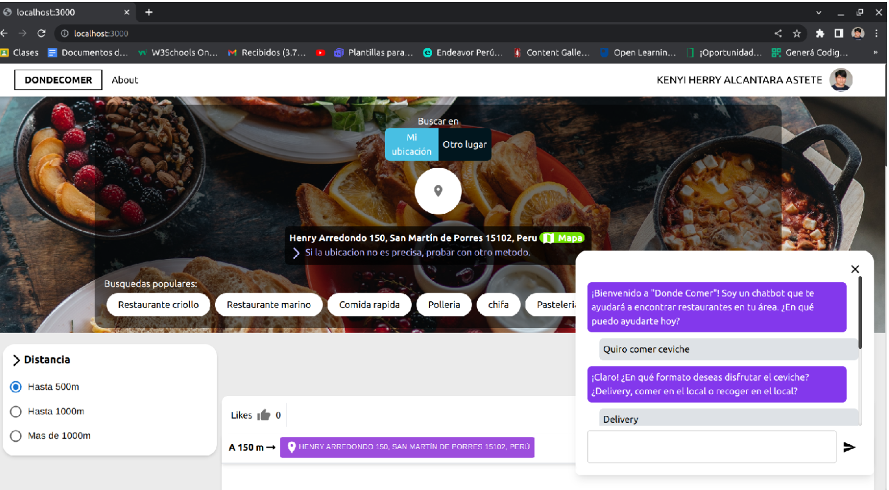
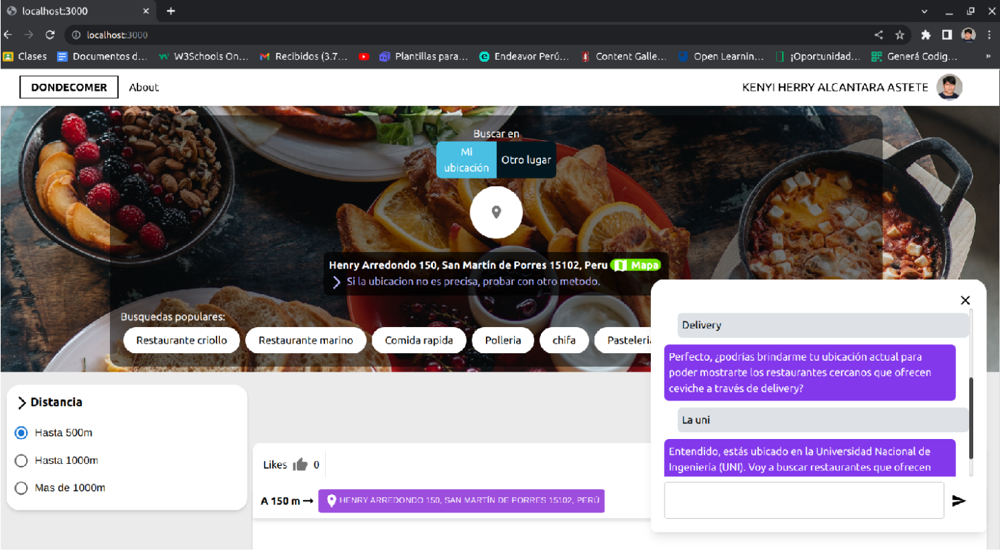
Informe #4
Requerimientos no funcionales
1. Carga rápida
La aplicación debe cargar rápidamente para ofrecer una experiencia fluida a los usuarios y minimizar los tiempos de espera.
Para lograr alcanzar este requerimiento, se pueden realizar las siguientes configuraciones en la interfaz:
2. Seguridad
La aplicación debe garantizar la seguridad de la información del usuario, como datos personales y de pago, mediante la implementación de encriptación de datos.
Al estar desarrollando la aplicación usando Firebase, se provee de mecanismos de seguridad inherentes al acceso de cuentas a través de Google, como los siguientes:
3. Accesibilidad
La aplicación debe ser accesible para usuarios con discapacidades, brindando una experiencia inclusiva y facilitando su uso.
Se planea usar interfaz de control de voz para poder navegar a través de la aplicación, por lo que se deben cumplir los siguientes criterios:
4. Escalabilidad
La aplicación debe ser capaz de manejar un aumento en el número de usuarios y transacciones sin degradar el rendimiento.
5. Usabilidad
La aplicación debe ser fácil de usar y proporcionar una experiencia intuitiva y agradable para los usuarios.
Para lograr este requerimiento, se debe:
Requerimientos Funcionales
1. Registro de usuario (Público) en la aplicación
Requerimientos:
El sistema debe permitir a los usuarios crear una cuenta en la aplicación.
Los usuarios deben proporcionar información como nombre, dirección de correo electrónico y contraseña para registrarse.
El sistema debe validar la información proporcionada por el usuario durante el proceso de registro.
El sistema debe almacenar de forma segura la información del usuario en la base de datos.
Caso de uso:
2. Búsqueda local de restaurantes
Requerimientos:
El sistema debe permitir a los usuarios buscar restaurantes cercanos a su ubicación actual.
El sistema debe utilizar la ubicación del usuario para mostrar los restaurantes más relevantes en el área.
Los usuarios deben poder ver información detallada sobre cada restaurante, como su nombre, dirección y calificaciones.
Caso de uso:
3. Filtros de búsqueda
Requerimientos:
El sistema debe proporcionar filtros para refinar la búsqueda de restaurantes.
Los usuarios deben poder filtrar los resultados por categoría de comida, rango de precios, calificaciones, etc.
Los usuarios deben poder aplicar múltiples filtros para obtener resultados más precisos.
Caso de uso:
4. Solicitar recogida en el establecimiento
Requerimientos:
El sistema debe permitir a los usuarios realizar pedidos para recoger en el restaurante.
Los usuarios deben poder seleccionar un restaurante y ver su menú.
Los usuarios deben poder agregar elementos del menú a su pedido.
Los usuarios deben proporcionar detalles adicionales, como el tiempo estimado de recogida.
El sistema debe enviar una confirmación del pedido al usuario y al restaurante.
Caso de uso:
5. Reservar en un restaurante para consumo en el lugar
Requerimientos
El usuario necesita solicitar un consumo en local de manera que se le genere una reserva y pago por adelantado previa validación del servicio que esta por solicitar.
Caso de uso
6. Solicitar entrega a domicilio a un restaurante
Requerimientos
El usuario necesita que su pedido sea entregado en un lugar determinado que requiera.
Caso de uso
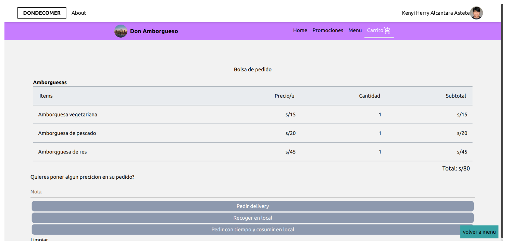
7. Sistema de reseñas
Requerimientos
El usuario necesita un criterio basado en experiencias de otros usuarios para elegir un local.
Caso de uso
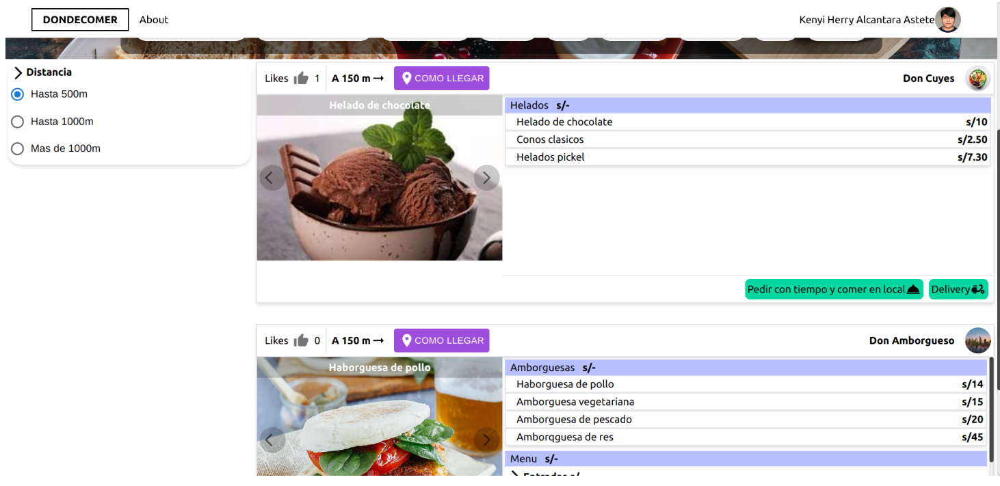
8. Visualizar pedidos activos y pasados
Requerimientos
El usuario necesita hacer seguimiento de sus pedidos delivery, sus reservaciones de consumo en local, o recojo.
Caso de uso 1
Caso de uso 2
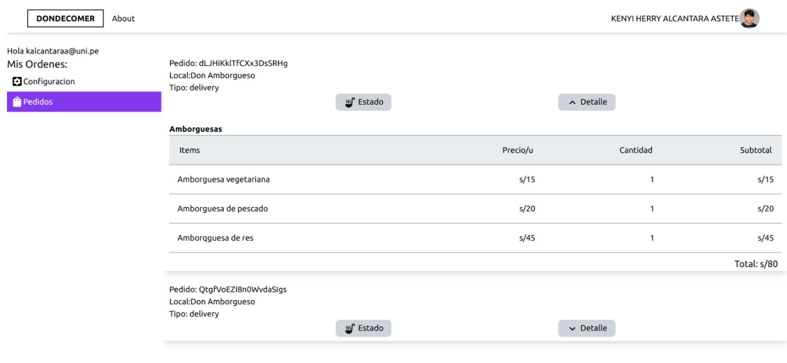
9. Registro de negocio en la aplicacion
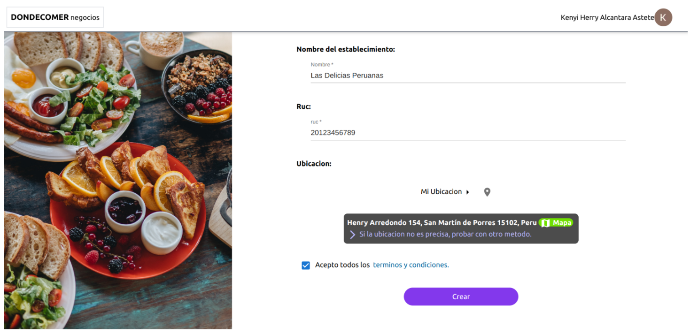
Requerimientos :
Registro del negocio: El usuario desea poder registrar su negocio en la aplicación, proporcionando información como nombre, dirección y ruc.
Caso de uso:
10. Customizar perfil restaurante:
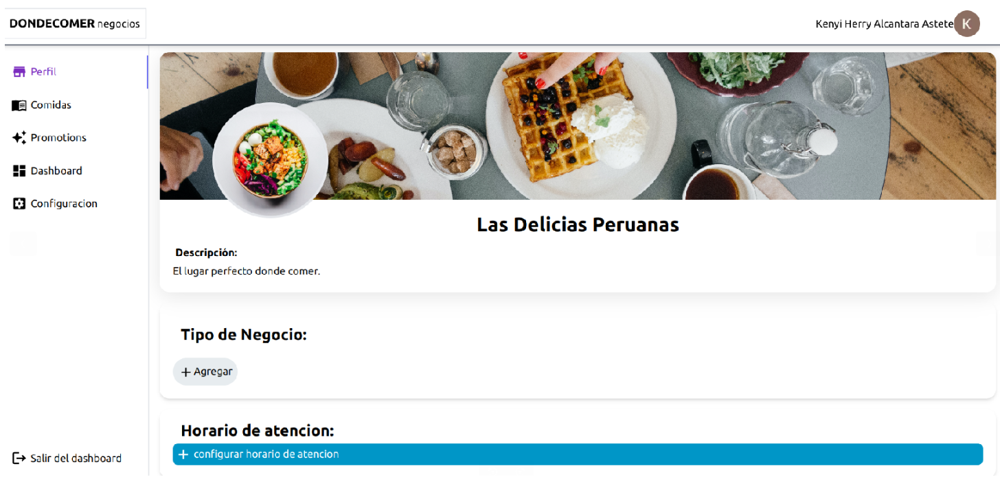
Requeriminetos del usurio:
Customizar apariencia y datos principales: El usuario quiere tener la opción, customizar la apariencia, configurar logo y fondo, quiere configurar el tipo de negocio, horario de atencion, habilitar los servicios que desea ofrecer a través de la aplicación, como entrega a domicilio, recogida en el local y comer en el local.
Caso de uso:
11. Customizar Platillos (Menu) Restaurante
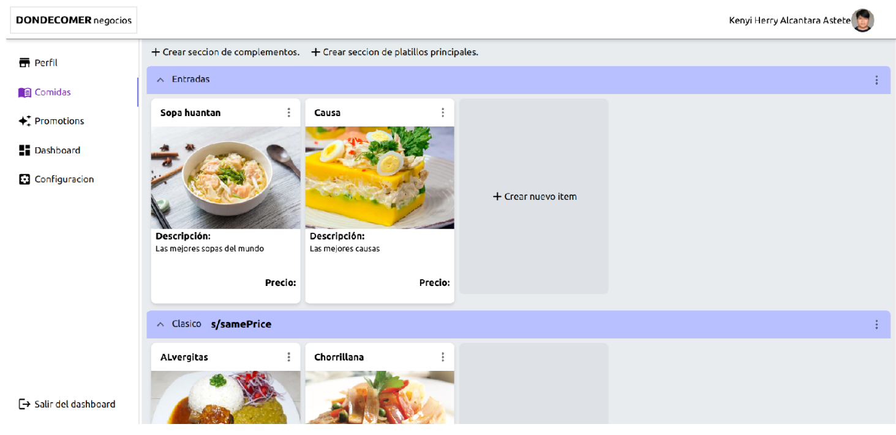
Requerimientos del usuario:
Customización del menú: El usuario necesita tener la capacidad de customizar el menú de su negocio, lo que incluye agregar secciones y subsecciones , nuevos platillos, actualizar la información de los platillos existentes y eliminar platillos del menú, y eliminar secciones o subsecciones.
Agregar seccion o subseccion: El usuario debe poder agregar secciones o subsecciones para agrupar platillos por precio o caracteristicas similares.
Agregar platillos: El usuario debe poder agregar nuevos platillos al menú proporcionando información como nombre, foto, descripción y precio.
Actualizar platillos: El usuario necesita la opción de modificar la información de los platillos existentes, como actualizar el nombre, la foto, la descripción o el precio.
Eliminar platillos: El usuario requiere la posibilidad de eliminar platillos que ya no están disponibles o que desee retirar del menú.
Eliminar seccion o subseccion: El usuario debe poder eliminar secciones o subsecciones.
Caso de uso
12. DashBoard de cada restaurante:
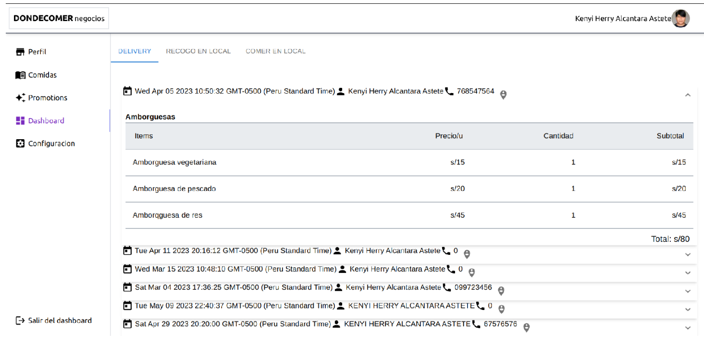
Requerimientos del usuario:
Dashboard de pedidos: El usuario necesita tener acceso a un dashboard o panel de control que muestre una vista general de los pedidos realizados por los clientes.
Organización por tipo de pedido: El usuario requiere la capacidad de visualizar los pedidos por tipo, como “Recoger en Local”, “Comer en local” y “Delivery”, para mantener una mejor organización.
Estado de los pedidos: El usuario debe poder ver el estado actual de cada orden, como resibido, preparando , listo para despachar o entregado.
Datos del pedido: El usuario necesita acceder a la la lista de platillos pedidos.
Datos del cliente: El usuario necesita acceder a los datos del cliente correspondientes a cada pedido, como número de teléfono, ubicación, nombre y código de pedido, para brindar un mejor servicio y cumplir con las necesidades del cliente.
Actualización de estados y notificaciones: El usuario debe tener la opción de actualizar el estado de los pedidos y, si es necesario, enviar notificaciones al cliente para mantenerlo informado sobre cualquier cambio o actualización en su pedido.
Caso de uso:
13. Promociones especiales:
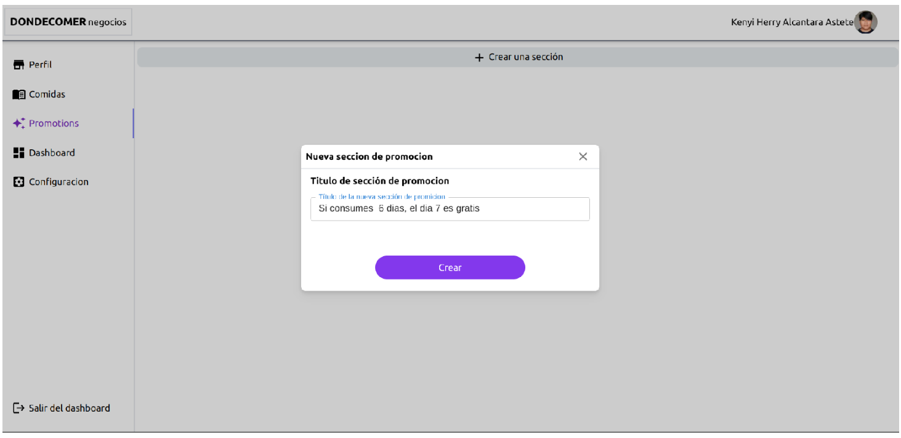
Requerimientos del usuario:
Gestión de promociones: El usuario necesita tener la capacidad de gestionar las promociones que ofrece a los clientes, incluyendo la capacidad de agregar nuevas promociones, actualizar la información de las promociones existentes y quitar promociones del listado.
Agregar promociones: El usuario debe poder agregar nuevas promociones, proporcionando información como el título, la descripción, las condiciones (por ejemplo, número de pedidos al mes) y los beneficios para el cliente.
Actualizar promociones: El usuario necesita la opción de modificar la información de las promociones existentes, como actualizar el título, la descripción, las condiciones o los beneficios.
Quitar promociones: El usuario requiere la posibilidad de eliminar promociones que ya no están vigentes o que desea retirar del listado.
Caso de uso: Gestión de promociones para el negocio en la aplicación
Requerimientos funcionales (actualización)
14. Navegación por voz
Caso de uso
Interfaz de voz para navegación en la página web, mediante comandos de voz procesados y enviados como peticiones a la API de ChatGPT, el cual responde un objeto con las posibles respuestas al comando, que se leen mediante un lector de pantalla
Descripción
Implementar una funcionalidad que permita a los usuarios navegar por la página web utilizando comandos de voz en lugar de interactuar con elementos visuales. Los usuarios podrán realizar acciones como seleccionar opciones del menú, acceder a diferentes secciones de la página, realizar búsquedas, interactuar con elementos interactivos y completar tareas básicas utilizando únicamente su voz.
La navegación por voz ofrece una experiencia accesible e inclusiva para personas con discapacidad visual o dificultades de motricidad, permitiéndoles interactuar y utilizar la página web de manera eficiente y cómoda. Además, proporciona una alternativa conveniente para todos los usuarios, ofreciendo una experiencia de navegación hands-free que puede ser más rápida y práctica en ciertos contextos, como al realizar tareas mientras se encuentran ocupados con otras actividades.
Criterio de cumplimiento
Dependencias
Conflictos
Posibles conflictos con otras funcionalidades o interacciones de la página web que podrían entrar en conflicto con los comandos de voz, como eventos de clic o acciones programadas.
Fuente: Los requerimientos se derivan de la necesidad de ofrecer una experiencia accesible y práctica para los usuarios de la página web.
Tiempo estimado de cumplimiento: El tiempo de implementación puede variar según la complejidad de la página web y las funcionalidades existentes. Se requerirá un análisis y diseño detallado antes de la implementación, por lo que el tiempo estimado puede variar entre una y tres semanas, dependiendo de los recursos y el alcance del proyecto.
Podemos ver los botones para entra en modo voz:
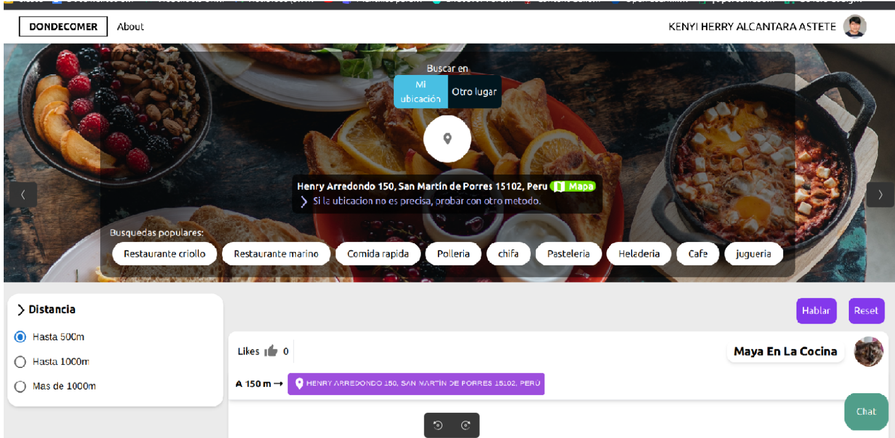
15. Chatbot LLM (Language Model)
Caso de uso
Implementación de un chatbot basado en el modelo de lenguaje GPT (Generative Pre-trained Transformer) para brindar respuestas a preguntas y llevar a cabo conversaciones con los usuarios de la página web.
Descripción
El chatbot LLM utiliza el modelo de lenguaje GPT para generar respuestas contextuales y coherentes a partir de las consultas y mensajes de los usuarios. El objetivo principal es proporcionar una experiencia interactiva y conversacional en la página web, donde los usuarios puedan obtener respuestas a sus preguntas, recibir recomendaciones, realizar consultas y obtener información de manera eficiente y natural.
El chatbot se integra en la página web y se muestra en una ventana de chat. Los usuarios pueden interactuar con el chatbot ingresando mensajes de texto y recibiendo respuestas en tiempo real. El chatbot utiliza técnicas de procesamiento de lenguaje natural para comprender las consultas de los usuarios y generar respuestas relevantes.
Criterio de cumplimiento
Dependencias
Conflictos
Podemos ver images de demostracion:
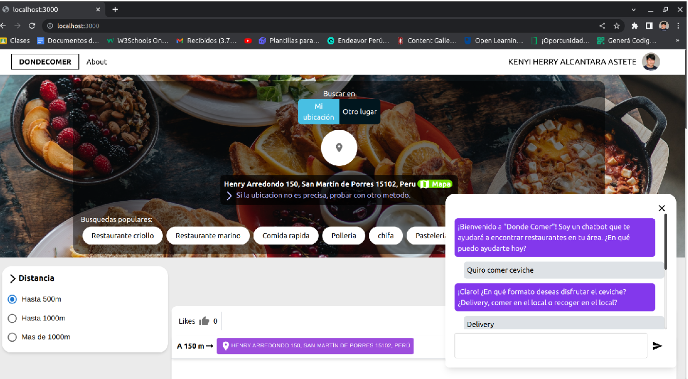
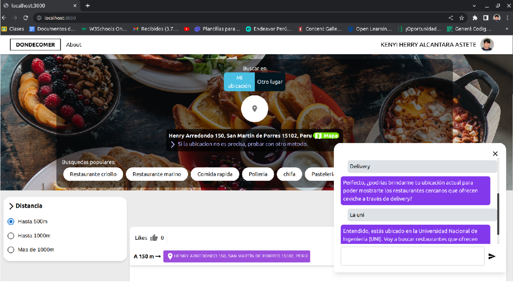